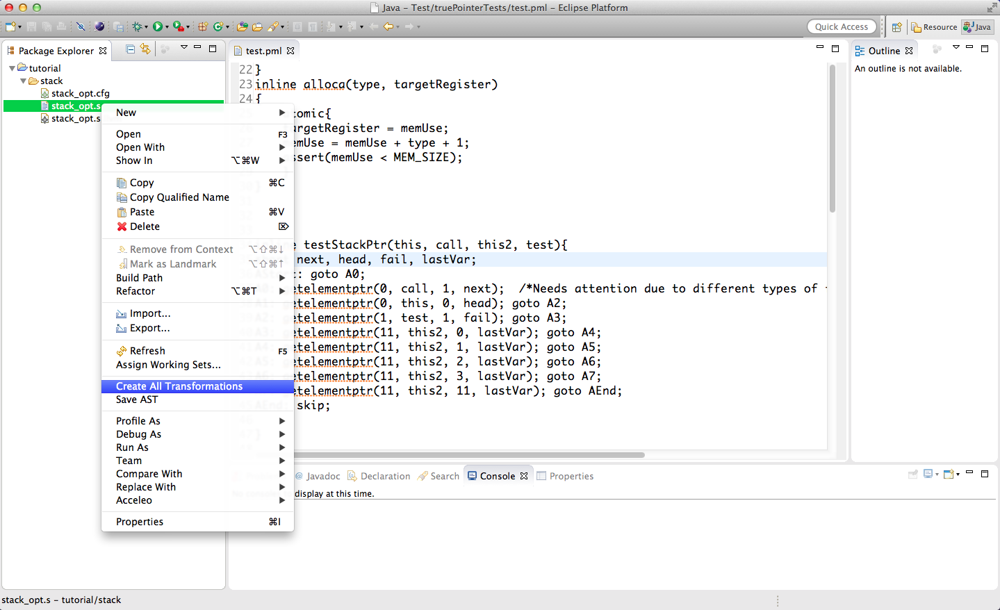
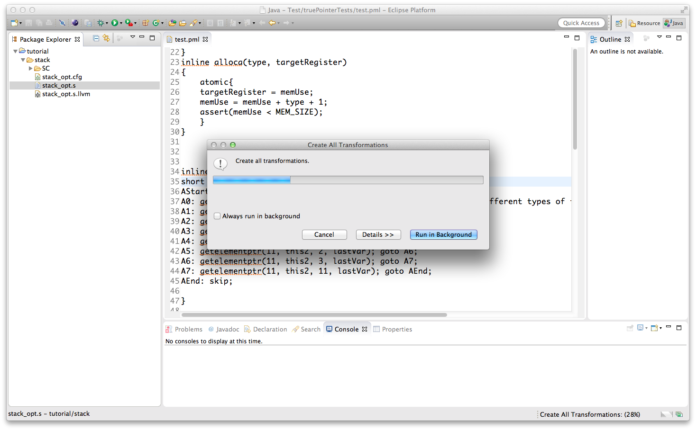

Generate All Specifications
If you are interested in obtaining all supported specifications for a llvm file, there is a simple way to generate those. Using our "Create All Transformations" feature you can
generate all specifications for all memory models, currently supported. The required intermediate files will be generated on the fly and deleted at the end of the transformation.
How To
Take a look at the step by step guide to see how to generate an LLVM file for a C file. If you have a LLVM ('.s') file, right click it and select
'Create All Transformations'. All transformations will be placed in folders named regarding the settings of the specification. All generated folders will be in the same folder as
the original LLVM file.

The tool will generate
- four KIV models with different settings:
- global settings with int basis
- global settings with nat basis
- local settings with int basis
- local settings with nat basis
- two promela models:
- operational
- non operational
for each currently supported memory model. For a list of the supported memory models, check TODO.
Please note that this process might take a while.
